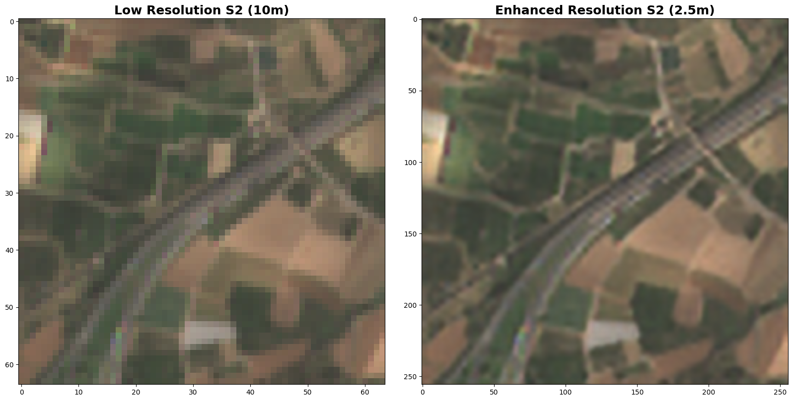
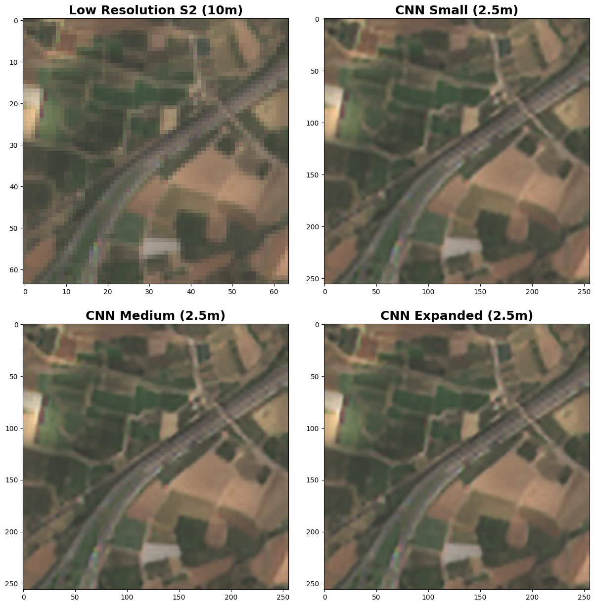
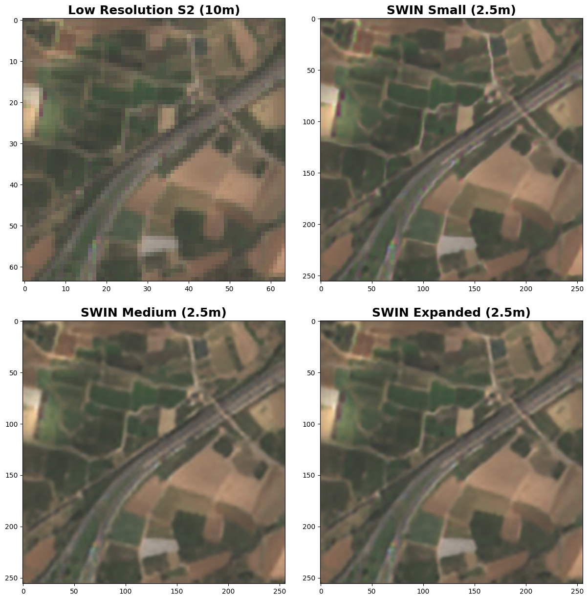
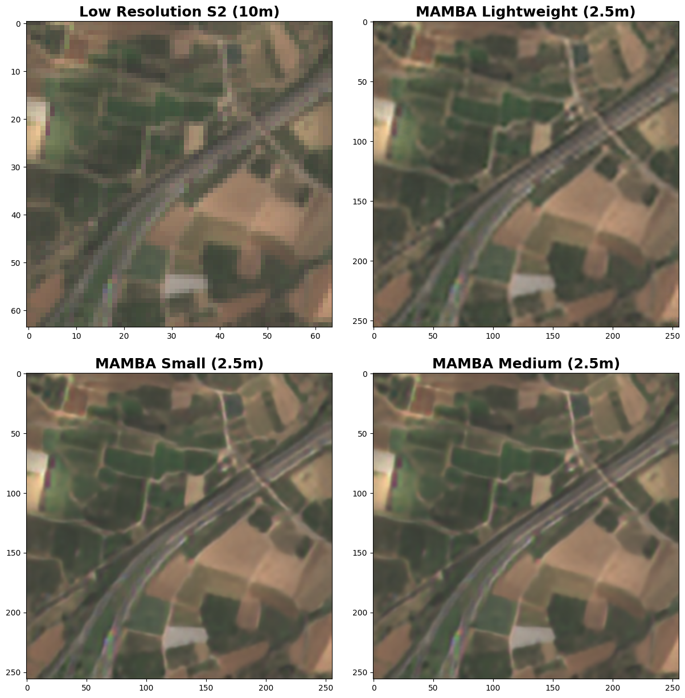
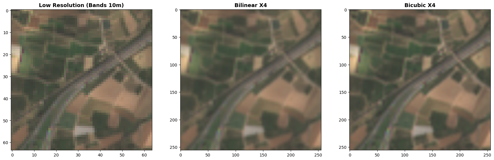
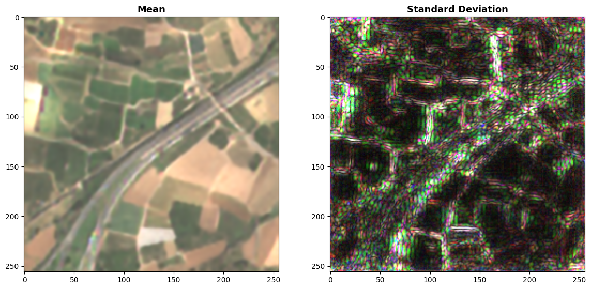

A Python package for enhancing the spatial resolution of Sentinel-2 satellite images up to 2.5 meters 🚀


GitHub: https://github.com/IPL-UV/supers2 🌐
PyPI: https://pypi.org/project/supers2/ 🛠️
Table of Contents
- Overview 📊
- Installation ⚙️
- How to use 🛠️
- Load libraries
- Download Sentinel-2 L2A cube
- Prepare the data (CPU and GPU usage)
- Default model setup
- Configuring the Spatial Resolution Enhancement Model
- Available Models:
- Predict only RGBNIR bands 🌍
- Estimate the uncertainty of the model 📊
- Estimate the Local Attention Map of the model 📊
- Use the opensr-test and supers2 to analyze the hallucination pixels 📊
Overview 📊
supers2 is a Python package designed to enhance the spatial resolution of Sentinel-2 satellite images to 2.5 meters using a set of neural network models.
Installation ⚙️
Install the latest version from PyPI:
pip install supers2
From GitHub:
pip install git+https://github.com/IPL-UV/supers2.git
How to use 🛠️
Load libraries
import matplotlib.pyplot as plt
import numpy as np
import torch
import cubo
import supers2
Download Sentinel-2 L2A cube
# Create a Sentinel-2 L2A data cube for a specific location and date range
da = cubo.create(
lat=39.49152740347753,
lon=-0.4308725142800361,
collection="sentinel-2-l2a",
bands=["B02", "B03", "B04", "B05", "B06", "B07", "B08", "B8A", "B11", "B12"],
start_date="2023-01-01",
end_date="2023-12-31",
edge_size=64,
resolution=10
)
Prepare the data (CPU and GPU usage)
When converting a NumPy array to a PyTorch tensor:
- GPU: Use
.cuda()to transfer the tensor to the GPU if available, improving speed for large datasets or models.
- CPU: If no GPU is available, PyTorch defaults to the CPU; omit .
.cuda().
Here’s how you can handle both scenarios dynamically:
# Check if CUDA is available, use GPU if possible
device = torch.device("cuda" if torch.cuda.is_available() else "cpu")
# Convert the data array to NumPy and scale
original_s2_numpy = (da[11].compute().to_numpy() / 10_000).astype("float32")
# Create the tensor and move it to the appropriate device (CPU or GPU)
X = torch.from_numpy(original_s2_numpy).float().to(device)
Default model setup
The default model is pre-trained for 2.5m resolution but supports 5m and 10m resolutions via the resolution parameter. It uses lightweight CNN architectures for super-resolution and fusion (sr_model_snippet, fusionx2_model_snippet, fusionx4_model_snippet). Models run on CPU or GPU, configurable via device. For more details on the architectures, refer to the section.
# Set up the model
models = supers2.setmodel(device=device)
# Apply model
superX = supers2.predict(X, models=models, resolution="2.5m")
The first plot shows the original Sentinel-2 RGB image (10m resolution). The second plot displays the enhanced version with finer spatial details (2.5m resolution) using a lightweight CNN.
fig, ax = plt.subplots(1, 2, figsize=(10, 5))
ax[0].imshow(X[[2, 1, 0]].permute(1, 2, 0).cpu().numpy()*4)
ax[0].set_title("Original S2")
ax[1].imshow(superX[[2, 1, 0]].permute(1, 2, 0).cpu().numpy()*4)
ax[1].set_title("Enhanced Resolution S2")
plt.show()

Configuring Model
In supers2, you can choose from several types of models to enhance the spatial resolution of Sentinel-2 images. Below are the configurations for each model type and their respective size options. Each model is configured using supers2.setmodel, where the sr_model_snippet argument defines the super-resolution model, and fusionx2_model_snippet and fusionx4_model_snippet correspond to additional fusion models.
Available Models:
1. CNN Models
CNN-based models are available in the following sizes: lightweight, small, medium, expanded, and large.
# Example configuration for a CNN model
models = supers2.setmodel(
sr_model_snippet="sr__opensrbaseline__cnn__lightweight__l1",
fusionx2_model_snippet="fusionx2__opensrbaseline__cnn__lightweight__l1",
fusionx4_model_snippet="fusionx4__opensrbaseline__cnn__lightweight__l1",
resolution="2.5m",
device=device
)
# Apply spatial resolution enhancement
superX = supers2.predict(X, models=models, resolution="2.5m")
small with the desired size):
lightweightsmallmediumexpandedlarge

2. SWIN Models
SWIN models are optimized for varying levels of detail and offer size options: lightweight, small, medium, and expanded.
# Example configuration for a SWIN model
models = supers2.setmodel(
sr_model_snippet="sr__opensrbaseline__swin__lightweight__l1",
fusionx2_model_snippet="fusionx2__opensrbaseline__cnn__lightweight__l1",
fusionx4_model_snippet="fusionx4__opensrbaseline__cnn__lightweight__l1",
resolution="2.5m",
device=device
)
Available sizes:
lightweightsmallmediumexpanded

3. MAMBA Models
MAMBA models also come in various sizes, similar to SWIN and CNN: lightweight, small, medium, and expanded.
# Example configuration for a MAMBA model
models = supers2.setmodel(
sr_model_snippet="sr__opensrbaseline__mamba__lightweight__l1",
fusionx2_model_snippet="fusionx2__opensrbaseline__cnn__lightweight__l1",
fusionx4_model_snippet="fusionx4__opensrbaseline__cnn__lightweight__l1",
resolution="2.5m",
device=device
)
Available sizes:
lightweightsmallmediumexpanded

4. Diffusion Model
The opensrdiffusion model is only available in the large size. This model is suited for deep resolution enhancement without additional configurations.
# Configuration for the Diffusion model
models = supers2.setmodel(
sr_model_snippet="sr__opensrdiffusion__large__l1",
fusionx2_model_snippet="fusionx2__opensrbaseline__cnn__lightweight__l1",
fusionx4_model_snippet="fusionx4__opensrbaseline__cnn__lightweight__l1",
resolution="2.5m",
device=device
)
5. Simple Models (Bilinear and Bicubic)
For fast interpolation, bilinear and bicubic interpolation models can be used. These models do not require complex configurations and are useful for quick evaluations of enhanced resolution.
from supers2.models.simple import BilinearSR, BicubicSR
# Bilinear Interpolation Model
bilinear_model = BilinearSR(device=device, scale_factor=4).to(device)
super_bilinear = bilinear_model(X[None]).squeeze(0)
# Bicubic Interpolation Model
bicubic_model = BicubicSR(device=device, scale_factor=4).to(device)
super_bicubic = bicubic_model(X[None]).squeeze(0)

Apply spatial resolution enhancement
Predict only RGBNIR bands 🌍
superX = supers2.predict_rgbnir(X[[2, 1, 0, 6]])
Estimate the uncertainty of the model 📊
from supers2.trained_models import SRmodels
# Get the available models
models = list(SRmodels.model_dump()["object"].keys())
# Get only swin transformer models
swin2sr_models = [model for model in models if "swin" in model]
map_mean, map_std = supers2.uncertainty(
X[[2, 1, 0, 6]],
models=swin2sr_models
)
# Visualize the uncertainty
fig, ax = plt.subplots(1, 2, figsize=(10, 5))
ax[0].imshow(mean_map[0:3].cpu().numpy().transpose(1, 2, 0)*3)
ax[0].set_title("Mean")
ax[1].imshow(std_map[0:3].cpu().numpy().transpose(1, 2, 0)*100)
ax[1].set_title("Standard Deviation")
plt.show()

Estimate the Local Attention Map of the model 📊
kde_map, complexity_metric, robustness_metric, robustness_vector = supers2.lam(
X=X[[2, 1, 0, 6]].cpu(), # The input tensor
model=models.srx4, # The SR model
h=240, # The height of the window
w=240, # The width of the window
window=128, # The window size
scales = ["1x", "2x", "3x", "4x", "5x", "6x", "7x", "8x"]
)
# Visualize the results
plt.imshow(kde_map)
plt.title("Kernel Density Estimation")
plt.show()
plt.plot(robustness_vector)
plt.title("Robustness Vector")
plt.show()